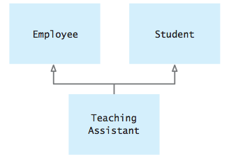
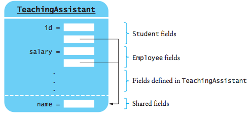

Йерархии на наследственост
План:
Абстрактни класове
Получаване на информация по време на изпълнение
Многократна наследственост
 Абстрактни класове (преговор)
Абстрактни класове (преговор)
Пример: Йерархия на геометрични фигури в равнината.

- Ако искаме да имаме полиморфна функция за лице на фигура - area, то тази функция трябва да бъде
дефинирана в базовия клас Shape.
- Тази функция има смисъл за всеки клас, производен на класа Shape, но в класа Shape
тя няма смисъл.
- Такава функция се декларира по специален начин в базовия клас и се
нарича чисто виртуална член-функция.
class Shape {
...
virtual double area() const = 0;
};
- Клас, който има поне една чисто виртуална член-функция се нарича
абстрактен клас.
- Клас, който се състои изцяло от чисто виртуални член-функции
понякога се нарича интерфейс.
Пример:
class Shape {
public:
virtual double perimeter() const = 0;
virtual double area() const =
0;
};
class Triangle: public Shape {
public:
...
virtual double perimeter() const
{ return a + b + c; }
virtual double area() const
{ double p = (a + b + c)/2;
return
sqrt(p*(p-a)*(p-b)*(p-c));
}
private:
double a, b, c;
};
class Circle: public Shape {
public:
...
virtual double perimeter()
const
{ return 2*PI*r; }
virtual double area()
const
{ return PI*r*r; }
private:
double r;
};
...
int main()
{
// Shape* s = new Shape;
// ERROR!!
Shape* s = new Triangle(4, 5,
6); // First s is a triangle
cout <<
"Area is " << s.area() << "\n";
s = new Circle(10);
//
Now it is a square
cout << "Area is " <<
s.area() << "\n";
...
return 0;
}
Получаване на информация по време на изпълнение
* Операция dynamic_cast
Унарната операция dynamic_cast изисква тип като параметър
на шаблон, и аргумент, който трябва да бъде указател или псевдоним
(референция).
Пример: Manager е производен клас на Employee:
// Implicitly converts from Manager to
Employee
Employee* e = new Manager("Sarah",
67000, "A");
// Explicitly converts from Employee to
Manager
Manager* m =
dynamic_cast<Manager*>(e);
Ако аргументът е указател сочещ към клас, който е различен от
параметъра на шаблона, резултатът от операцията е NULL.
Пример: Проверка дали указател сочи към обект от даден клас в
полиморфна колекция.
for (int i = 0; i < department.size();
i++)
{
Manager* m =
dynamic_cast<Manager*>(department[i]);
if (m != NULL)
{
cout << "Employee " << department[i]->get_name()
<< " is a manager.\n";
m->set_bonus(2000); // Can now invoke manager member functions
}
else
cout << "Employee " << department[i]->get_name()
<< " is not a
manager.\n";
}
dynamic.cpp
Повече за dynamic_cast:
https://stackoverflow.com/questions/2253168/dynamic-cast-and-static-cast-in-c
* Операция typeid
За да се получи (името на) конкретен тип на даден обект, се
използва операция typeid.
Аргумент на операцията е израз, или име на клас и връща обект от тип
type_info, който е дефиниран в заглавния файл <typeinfo>.
В класа type_info има дефинирана член-функция name(),
която връща име на тип.
Пример:
for (int i = 0; i < department.size(); i++)
cout <<
typeid(*department[i]).name() << "\n";
Друг начин за тестване на типа на обект е да се сравнява стойността
в typeinfo с тази на известен клас:
for (int i = 0; i < department.size(); i++)
{
if
(typeid(*department[i]) == typeid(Manager))
cout << "Employee " << department[i]->get_name()
<< " is a manager. \n";
else
cout << "Employee " << department[i]->get_name()
<< " is not a manager. \n";
}
dynamic.cpp
Използването на dynamic_cast и typeid
трябва да се избягва, като се замества с механизма на виртуалните
функции.
Многократна наследственост (множествено
наследяване)
Пример: Потоковата библиотека на С++ се състои от
няколко класове, свързани в следната йерархия: 
Когато се използва многократно наследяване, диаграмата за
наследяване на класове вече не е дърво, а насочен ацикличен граф или
DAG.
Пример: Викане на функция в производен клас, която е
дефинирана и в двата базови класове.

// multi.cpp
#include<iostream>
using namespace std;
class Student {
public:
Student()
{ id = "sid"; }
virtual string get_id() const
{ return id; }
private:
string id;
};
class Employee {
public:
Employee()
{ id = "eid"; }
virtual string get_id() const
{ return id; }
private:
string id;
};
class TeachingAssistant : public Employee, public Student {
public:
TeachingAssistant():Employee(),
Student(){}
// string get_id() const;
string student_id() const;
};
string TeachingAssistant::student_id() const
// Make student value available by a different name
{
return Student::get_id();
}
int main()
{
TeachingAssistant* fred = new
TeachingAssistant();
Employee* new_hire = fred; // Legal,
because a TeachingAssistant is-a Employee
Student* advisee = fred; // Legal,
because a TeachingAssistant is-a Student
Student* mary = new Student();
// Student* mary = new
TeachingAssistant();
TeachingAssistant* lab_instructor =
dynamic_cast<TeachingAssistant*>(mary);
if (lab_instructor != NULL)
cout <<
"Yes, mary is a TeachingAssistant. \n";
else
cout <<
"No, mary is not a TeachingAssistant. \n";
cout << "Your number is " <<
fred->get_id() << "\n"; // Error, ambiguous member
function name
return 0;
}
Решение е да си използва пълното име на функцията или да се
предефинира тази функция в производния клас.
class TeachingAssistant : public Student, public Employee
{
public:
string get_id() const;
string student_id() const;
};
// get_id will return Employee identification number string
TeachingAssistant::get_id()
{
return Employee::get_id();
}
string TeachingAssistant::student_id()
// Make student value available by a different name
{
return Student::get_id();
}
* Дублиране на базови класове.
Пример:
class MultiplePartTime : public Employee, public Employee //
Error
{ ... };
При използване на многократно наследственост може да се появи
подобна ситуация.
class Person {
public:
Person(string n);
string get_name()
const;
private:
string name;
};
class Student : public Person {
... };
class Employee : public Person {
... };
Cay S. Horstmann, Timothy A. Budd Big C++ 2008
class TeachingAssistant : public Employee, public Student {
... };
Във всеки обект от клас TeachingAssistant се
съдържат два пъти данни от клас Person.
За да имаме само един екземпляр от клас Person, използваме виртуална
наследственост.
class Student : virtual public Person {
... };
class Employee : virtual public Person {
... };
class TeachingAssistant : public Student, public Employee {
... };

Cay S. Horstmann, Timothy A. Budd Big C++ 2008
Обща препоръка е да се избягва многократна наследственост.